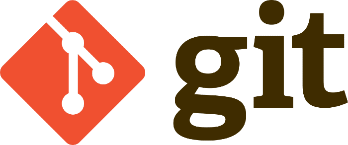
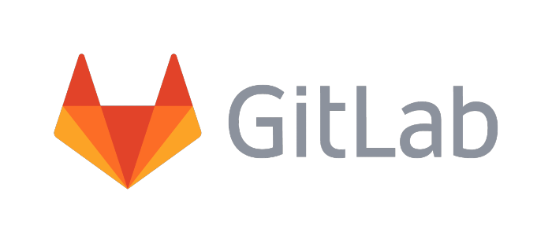
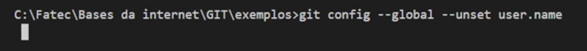

O que é controle de versão
O controle de versão é um sistema onde você pode controlar os arquivos e projetos, podendo ser visto todas as atualizações feitas e solucionando problemas encontrados nos arquivos. É conhecido também como VCS
Sistemas Locais de Controle de Versão (VCSs)
É um banco de dados simples criado para manter todas as alterações dos arquivos e evitar possíveis erros e facilitar as revisões. Uma ferramenta dele é o RCS que funciona mantendo um conjunto de alterações em um formato especial no disco, podendo recriar o arquivo adicionando todas as alterações.
Sistemas Centralizados de controle de versão (CVCSs)
Possui um único servidor com todos os arquivos de controle de versão e controla as pessoas que colaboram para desenvolver em outros sistemas tendo uma quantidade certa de pessoas e o que cada um faz, tendo isso como vantagens. A desvantagem é que se esse servidor der um problema, dependendo da quantidade de horas, ninguém poderá utilizá-lo com colaboração ou salvar as alterações de versão. Se o disco rígido for corrompido e não tiver sido feito um backup perderá toda história seu projeto.
Sistemas Distribuídos de controle de versão (DVCS)
Através dele os clientes têm acesso a um estado recente do arquivo, podendo duplicar localmente o repositório completo e assim, se o servidor morrer e esse sistema estiver sendo usado para colaboração, qualquer um dos repositórios pode ser copiado de volta para o servidor, funcionando como um backup do arquivo Ele funciona também muito bem para colaborar em diferentes grupos de pessoas de maneiras diferentes ao mesmo tempo dentro do mesmo projeto.
O que é Git
o Git é um sistema de controle de versão distribuído(DVCS) de código aberto desenvolvido por Linus Torvalds no ano de 2005. O sistema é um dos mais utlizado no mundo pelos desenvolvedores de software. Pois possibilita que uma equipe por exemplo de desenvolvedores possa trabalhar junta em único projeto, tornado o trabalho mais eficiente e mais rápido, e o Git mantem tudo em ordem.
O que é GitHub
O GitHub é um sistema web para hospedar o código- fonte e os arquivos de um projeto usando um dos principais controladores de versão do mundo, o Git. Contribui amplamente no desenvolvimento de novos Frameworks e sistemas open-source ou privados. Pois existe uma comunidade enorme de Desenvolvedores ao redor do mundo que fazem essa roda girar. Possibilita também a criação de portfólios para os programadores divulgarem os seus trabalhos. São mais de 100 milhões de projetos que estão abrigados no GitHub, empresas gigantes do mundo da tecnologia utilizam o GitHub, por exemplo Google e Microsoft.
O que é GitLab
O GitLab é basicamente um GitHub, sua principal diferença, é que o GitLab permite que os desenvolvedores armazenem seus projetos em seus próprios servidores, e não em um servidor de terceiros, podendo até em certos casos ter que pagar pela hospedagem dele nesses servidores paralelos.
O que é Git Pull
O comando git pull é usado para obter atualizações do repositório remoto.
Git pull é a combinação de dois comandos, Git fetch e o git merge. No git fetch, ele basicamente vai atras das últimas atualizações do repositório, e o git merge, pega essas informações e insere dentro da branch local (pc do usuário que executou o comando), assim o arquivo pode ser manipulado com as últimas alterações.
O que são Branches
Em tradução livre, Banches significa raízes, e essas raízes, são as copias de repositórios criadas para que cada desenvolvedor possa fazer suas alterações sem interferir em outros trabalhos sendo executados por outros desenvolvedores.
Branches são separações de código, normalmente são utilizados para separar alterações grandes ou novas funcionalidades do projeto, por exemplo: Existe um projeto de blog, os desenvolvedores já fizeram quase toda a parte do blog, mas existem alterações para fazer no sistema de usuários do blog e algumas a fazer no sistema de posts do blog. Para isso, cria se uma branch "usuarios" e uma "posts" (ou algo do tipo) e fazem-se as alterações nessas branches, um time trabalha em cada uma dessas branches, enquanto isso, outro time continua trabalhando em pequenas mudanças ou bugfixes na branch master.
Explicação de como criar uma conta em um dos serviços
Este é o método para criar uma conta no GIT.
Escreva os comandos a seguir com suas informações:
Comandos abaixo devem ser inseridos no Git CMD.
git config --global user.name 1"Seu nome normal ou nick name"
git config --global user.email exemplo@seuemail.com.br
Para corrigir um erro de criação de conta, use o comando abaixo, ele apaga o nome ou email que você colocou errado. Usando user.name no final, você apaga o nome, usando user.email, você apaga o email, após isso é so repetir o processo acima e colocar corretamente. Lembre-se, é importante que tanto no git quanto no GitHub, o nome e o email sejam extamente iguais, caso contrário, erros acontecerão.
para ver se está tudo certo, use o comando a seguir para ver a lista de todas as configurações: git config --list
Explicação sobre como um grupo de faculdade pode usar o Git para colaborar em um projeto, como, não sei, talvez um Projeto Integrador.
Com o Git, todos teriam acesso ao arquivo ao mesmo tempo, sendo assim, não seria necessário ficar passando o arquivo compactado de um para o outro, empacando o grupo caso um demorasse a fazer sua parte, etc. Teríamos o controle de nossas alterações no decorrer do processo, além de reduzir a possibilidade da perda do arquivo.